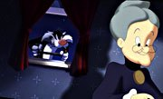

Hundreds of people around the world worked together to put Michael Jordan in Looney Tune Land. Read on...
Table of Contents:
- Putting Real Life into the Cartoon World
- Technology Shapes Art
- Being Green
- To Sherman Oaks -- And Beyond
- On to Cinesite
- On the Basketball Court
- Filling the Bleachers
- Distorting Michael Jordan
- The Artist is in the System
THE TECHNICAL BACKGROUND TO SPACE JAM
by Bill Warren
Ivan Reitman is known as the director of such hit comedies as Twins, Stripes and Dave, but in his busy career, he has returned again and again to technically challenging projects. He produced They Came from Within, the first David Cronenberg movie to get wide release; it involved creepy parasites. Reitman also produced Heavy Metal, one of the first feature cartoons aimed primarily at adult audiences. And, of course, there was Ghostbusters and its sequel, the worldwide hits that he both produced and directed--and which opened many doors to new kinds of special effects.So it's hardly surprising that Reitman has now produced Warner Bros.' first release through its new Feature Animation division: Space Jam, directed by Joe Pytka. It is also the first feature film in history to combine such a large amount of traditional cartoon animation, live action and three-dimensional computer graphics. Space Jam stars sports superstar Michael Jordan as well as Bugs Bunny, the Looney Tunes, Wayne Knight, Theresa Randle. Cameos are played by Bill Murray, former Boston Celtics great Larry Bird, and NBA stars Patrick Ewing, Charles Barkely, Muggsy Bogues, Larry Johnson and Shawn Bradley. Reitman's long-time associates, Joe Medjuck and Dan Goldberg, produce with him.
The animation segments, produced through Warner Bros Feature Animation, are co-directed by Bruce Smith and Tony Cervone, and the animation producer is Ron Tippe. The post-production and computer visual effects were created by Cinesite, a Hollywood facility specializing in digital dazzle and sophisticated effects, whose founder, Ed Jones, received an Academy Award for his work on Who Framed Roger Rabbit?
So what does this exotic hybrid of computers, artists and actors require from the filmmakers and their crews?
When moviegoers think of "computer animation," they are most likely without a clear idea of what that term really means. Many may assume that a computer scientist sits in front of a console, types in the words "Bugs Bunny" and "Daffy Duck," chooses plot option C-27, and the setting "Mars." He presses "enter" and goes out for a cup of coffee. He comes back an hour later to find a seven-minute cartoon sticking out of the side of the computer.
Well, that's not all, folks. That's not even close, folks--for the artist is never out of the loop. As computer-intensive as it is, even Space Jam began with talented animators drawing some of the most famous cartoon characters in the world in the usual way: with pencil on paper. What happens after that is the technical story behind Space Jam.
PUTTING REAL LIFE INTO THE CARTOON WORLDCombining live human performers with cartoon characters goes back to almost the very birth of cartoons. In 1906, J. Stuart Blackton's Humorous Phases of Funny Faces featured a live cartoonist creating moving drawings on a blackboard. At the climax of Winsor McKay's famous Gertie the Dinosaur (1909), the delightful Gertie picks up her human creator and carries him off. Walt Disney began his career with a series of shorts in which a little girl named Alice--a live entertainer, shot on standard film--frolicked with cartoon animals.
Over the years, there were other brief attempts at combining live action and cartoons; Disney returned to it with Song of the South in 1949. At Warner Bros. the same year, in My Dream is Yours, Doris Day and Jack Carson scampered through a little boy's dream, performing with the Oscar-winning rabbit, Bugs Bunny. At MGM, Gene Kelly and Esther Williams performed with that studio's most famous characters, Tom & Jerry--Kelly in Anchors Aweigh (1945), Williams in Dangerous When Wet (1953). And back at Disney, the 1964 hit, Mary Poppins, sent Julie Andrews and Dick Van Dyke on a jolly holiday with animated penguins and street entertainers.
Although those sequences were spectacular and entertaining, it wasn't until the Amblin/Disney production of Who Framed Roger Rabbit? in 1988 that anyone tried to combine animated characters and live-action actors throughout a feature-length movie.
As dazzling and technically sophisticated as Who Framed Roger Rabbit? certainly was, that was then and this is now. As Tony Cervone puts it, "Roger Rabbit was the vinyl LP and this is the compact disc." Space Jam has leapfrogged ahead in the realm of combining live action and cartoons, by tapping the talents of Roger Rabbit innovator Ed Jones and other gifted effects and animation experts.
Wendy Aylsworth, Vice President of Technology and Facilities for Warner Bros. Feature Animation, points out the differences. "Everything in Roger Rabbit was shot to film, then the pieces of film were combined. But with today's technology, we can now have all of the animation colored in the computer; the original live-action footage is also scanned into the computer, and of course the three-dimensional aspects are created in the computer. So all of the individual elements for Space Jam can come together in the computer; each individual element can be modified in color and brightness and lighting and texture to make it all mesh seamlessly."
As Tony Cervone says, "I don't think any picture has combined so many different media as Space Jam has." Bruce Smith adds, "And all are interchangeable at different times, so it's not one medium with another constantly. There's animation with the CG [computer graphics] environment, it's animation in the traditional environment, it's live action in the CG environment, and live action with the animated environment."
TECHNOLOGY SHAPES ART
Almost all the advances seen on the screen are due to the amazingly rapid progress in the application of computers to the field of animation--in fact, to virtually every aspect of Space Jam. Early in the film, after we've met Michael Jordan, the camera pans upward and the standard live-action world is left behind as we see a miniature rooftop; the camera moves higher to a computer-created sky and the Nerdlucks' home planet.
Moving closer to this "3-D" world, the camera passes into a giant carved mouth and ends on a scene of classic cartoon (or "2-D") animation. In what looks like one unbroken camera movement, we move from the realm of reality to miniatures to computer graphics and finally to cartoon animation. (The use of the term "3-D" here differs from the old 3-D used in Warner Bros.' classic House of Wax: audiences won't dodge basketballs flying off the screen. Here, it means simply the realm of computer graphics which have a more solid, dimensional look than flat, "2-D" cartoon animation.)
Movies run at 24 frames per second, but most cartoon features are shot "on twos," meaning that one drawing is repeated for two frames. Therefore, there are 12 individual drawings for each second in the usual Hollywood cartoon.
However, it's true that in any feature, a lot of the animation is shot "on ones" -- 24 new drawings per second, just like the number of frames used to film live action. This is usually done for fast action or other moments where fluidity and clarity of action are important, or, as with Space Jam, when cartoons and live actors appear together and must coordinate their motion,reactions and postions. On Space Jam, all of this animation was done by hand by the animators of the film.
In addition to the state-of-the-art computers and animation techniques, other cutting-edge technology was used in "Space Jam." Most movies that blend effects into footage shot with a moving camera use variations on the "motion control" system originally developed for Star Wars. A computer is attached to the camera so that it can remember the precise moves the camera made, and can reproduce them when the effects team adds other elements to the scene. Or a camera computer can "encode" the movements of the camera even if it is being moved by a human operator.
Says director Joe Pytka, "We used the best equipment, as well as the best ideas we could come up with, to make Space Jam a movie worth watching. As technology continues to evolve, audiences know what to watch for and they develop certain expectations. our goal was to stay two steps ahead of their expectations -- we're setting expectations with this movie."
BEING GREEN
One of the problems in filming actors working with cartoon characters who are added later is that it's very hard for anyone to visually focus on an empty space three feet in front of them that will later be filled with a talking duck. Try it yourself: it's nearly impossible. The result is that the human beings rarely seem to be looking directly at the cartoon characters. Even if audiences don't notice this consciously, it's a kind of unconscious static that interferes with the belief that all this is really happening.
Reitman, director Joe Pytka and Ed Jones, the founder and head of Cinesite, came up with an ingenious solution to this problem--and their solution solves several other problems as well. It involves the use of a lot of green walls, green floors, and actors from the Groundlings improvisation comedy troupe covered all but for their eyes in clothing of the same green color. In fact, if you'd been on the set of Space Jam, you'd have seen the nearly surreal sight of Michael Jordan vigorously playing basketball in a green gym with a bunch of green people, some of whom scamper about in crouched-over positions. Other than Jordan himself, the only colors you could see other than green would have been the basketball net and its backboard--and regularly-spaced red balls and dots in a square grid all over the floors and walls. But that's not what you'll see in the finished film.
Joe Pytka loves strong, forceful camera moves; Michael Jordan is, of course, an athlete who expresses himself best through movement--and it can rarely be rehearsed in the way an acting performance is. As Ed Jones says, "We had to shoot Michael being inventive, and Michael's only inventive one time--the camera had better be ready to capture it." Spontaneity was the rule of the day, but cartoons, by their very nature, are, of course, totally controlled by the artists. The challenge was to combine Pytka's needs and Jordan's abilities with the cartoons. The solution was that green room and those red dots.
TO SHERMAN OAKS -- AND BEYOND
Because of the complex nature and relatively short production schedule of Space Jam, in addition to the team at the Warner Bros. Feature Animation facility in Sherman Oaks and the team in the company's London studio, the production recruited a select group of animation studios all over the world. Ultimately, everything was sent to Space Jam's Sherman Oaks headquarters, where all the drawings were scanned into computers and digitally transmitted, via fiber-optic cables, to Cinesite's computers for compositing.The involvement of computers on Space Jam began immediately after the animators completed their drawings, and the background painters their work. These were scanned into digital computer memory by using Cambridge Animation's powerful and versatile Animo software program, used to complete the next several stages of work.
The ink and paint department no longer uses real ink and real paint; instead, using the Animo program, they call up the animators' drawings, one frame at a time, onto a computer screen. The expressive pencil lines of the animators are temporarily replaced by very thin lines the computer creates--it even completes lines when the artist has, for purposes of delineation, left them broken.
Using color models created by art director Bill Perkins and his staff, the "painter" employs Animo's built-in palette to color each of the animated characters on the computer screen in flat, bright colors, much like a standard seven-minute cartoon. For the classic Looney Tunes gang, this was, of course, the colors established over years of use; for the Nerdlucks, Monstars and Swackhammer, the colors are, of course, new.
One of the most interesting features of Animo is that it allows the colors to be changed at will. Once a sequence is fully colored, if the directors or art director want the characters changed, this can be done with a few strokes on the keyboard. For example, if a scene originally colored for daylight becomes a nighttime scene instead, they can replace all of the bright colors with darker tones.
Animation producer Ron Tippe points out the advantages. "If you compare the traditional ink-and-paint process of Xeroxing the artwork onto cels and painting it by hand, there's a great savings in time. With original cel paint, very often only one or two colors at a time could be painted. You would then have to wait for those colors to dry, and then repaint it, so it was a very exhausting process." Wendy Aylsworth adds, "We're averaging about 4 minutes for every cel that's painted. Traditionally, if you hand-painted that stuff on acetate, it's more like 20 to 30 minutes per cel."
When all the coloring is done, the original pencil lines are restored; the flow, the thickness, the manipulation of the line that often adds so much to an animated character is back where it should be. If these lines need their own color changed, from the gray of pencil to, say, bold red for a dramatic effect, this can be done as well, without ever losing the characteristics of the animators' original drawings. With traditional animation, the color had to be scraped off each individual cel.
These technical innovations give shape and life to the Looney Tunes characters, but of course, there's more to Space Jam than a class reunion of Bugs, Daffy and their pals. There are live actors in the animated world, and animated characters in the real world.
Because so much of Space Jam takes place in the "real world," the drawings needed a further boost than is given in most cartoons: they needed to look as though they were being lit by movie lights. The "key light," the strongest light in a scene, was represented by highlighting the parts of the cartoon character illuminated most strongly by this light. "Fill lights," the dimmer lights in a scene, also needed to be indicated, as did the areas of the characters not being "struck" by light.
The "tone mattes" that create this were the work of effects animators. Bill Perkins explains, "They create hard-edged black pieces of artwork that define the lighter or darker areas on the character. The black region dictates at a later stage of compositing what kind of color is added to or taken out of that area of the character to make it appear rounded. So you'll have a piece of black matte artwork that defines the brighter areas where light is striking a character, and you'll have another that defines the darker area, where it's more in shade." The mattes themselves look like thick-lined, negative images of the animated characters with some parts left out.
"Each animated character," Wendy Aylsworth explains, "has multiple mattes drawn over it to give it shadings." The mattes were scanned into the Animo system, exactly like the original animation, then laid over the colored animation artwork to indicate the lightening and darkening of the colors of the individual characters section.
ON TO CINESITE
When all this work was done--entirely within the digital computer realm--it was transmitted over a high speed network connection from the Space Jam offices in Sherman Oaks to the offices of Cinesite, the computer visual-effects and post-production company, in Hollywood.Here, using Kodak's Cineon system, artists worked on the drawings even further with compositing computers. Digital effects producer Helen Elswit explains, "We set up a 'hero shot'--in each scene, a specific shot is chosen so that the art director, Bill Perkins, and I can sit down with the main compositor at the computer and set the look for the scene. For the most part, unless there is a dramatic mood or lighting change in a scene, one hero shot is sufficient. This shot is then put out on film so that Ivan Reitman can give his approval. Once we have that hero established, Cinesite joins the process, taking the hero shot and all the other shots from animation in that sequence, and builds the scene."
Cinesite vice president of production Mitzi Gallagher explains, "We found that as we began adding live-action and animated characters to a scene, the initial look needed to be adjusted to make sure that the right characters were emphasized with no one blending into the background. Our digital-effects supervisors, Carlos Arguello and Doug Tubach, adjusted the brightness, the colors, the tones and shadows, working with Ivan Reitman so that all the various elements were consistent and accomplished the scene the way he envisioned it throughout the scene."
Cinesite went further, too. They added depth to the backgrounds--buildings "moved" further away, trees came closer, for example. What would be called "grad filters" with a real camera were also employed, allowing a given shot to be darkened subtly around the edges, so that the viewer's eye will focus on the highlighted center of the shot. And they could manipulate the tone mattes further as well, creating as many different layers of shading as desired.
"We break the tone mattes down into separate elements," Ed Jones explains, "depending on whether they're on a cheek or on a body. We can control the density, the color, the amount of blur on the edge, depending on how we want to light the character. We are painting on film with the computer and we're creating dimensionality, depending on whether the character is closer to the camera or farther away. The closer it is to the camera, the more it must be modeled. And then we can add motion blur, like a camera shutter would blur a regular scene. We can stylize how each of these animated characters looks."
In traditional animation, these different layers represented by the flat art, the backgrounds and the tone mattes, were literally that: layers of celluloid with paint on them. Going beyond five or six layers tended to bring out the faint color of the celluloid itself, adding a yellowish, cloudy look to the more layered sequences. The famous "multiplane" of the Disney studios, which used sheets of glass stacked like a colossal sandwich, was an effort to overcome some of these problems, but it is a huge, cumbersome device used only for the most spectacular scenes requiring many layers of depth.
By keeping all of the drawings in digital form (but easily shown on a video screen), the Cineon operator can add as many layers of depth as the scene needs without any loss of definition or addition of unwanted color whatsoever. Tony Cervone adds, "You could put ten thousand layers on this stuff, and it will do nothing, it will never cloud up."
Furthermore, with all the animation now loaded into the computers, the kind of small errors that can creep in with so many people working on a project can easily be corrected. "Sometimes," says Wendy Aylsworth, "when we've got the shots together, the perspective doesn't look right, or the sizing is off because something went wrong in doing the rotoscopes (drawings based on moving images). Or perhaps a character was drawn too close, but should be further into the background. You can use the computer to completely re-size and reposition any character, to make them fit into the scene correctly. The computer is used a lot for that, making sure everything's staying in perspective."
ON THE BASKETBALL COURT
One problem that has always existed with cartoons is the sometimes wildly shifting perspectives of a background. If you are using a movie or video camera, panning over any background behind the actors, if you examined the film a frame at a time, you'd see that the background seems to distort a little--or a lot, if a wide-angle lens is used.
In conventional cartoons, this distortion has to be drawn in by hand on the backgrounds. For example, if the scene required a swift pan down a drainpipe on the corner of a building, the artist had to draw a radically distorted drainpipe: straw-thin at the top of the drawing, expanding to a big bulge in the middle, tapering away to nothing again at the bottom. The camera, moving in a flat plane down this artwork, appeared to do a whip-pan down the side of the building. And don't forget the building: that, too, would have to be carefully drawn in a distorted way to match the drainpipe.
It takes the talents of both an artist and a mathematician to create this kind of distortion, and it takes a lot of time. Space Jam, surprisingly enough, went from conception to finished product in one-third the time of a normal animated feature-and yet it required more amazing shifts in perspective than a normal animated feature.
Originally, the giant basketball stadium at the end was going to be raised up above the basketball court, in an effort to overcome some of these perspective problems, as well as to evade having to animate all the spectators. But Ivan Reitman and Joe Pytka bit the bullet: in a real NBA stadium, the seats come right down to a few feet of the basketball court, so the stadium in Space Jam required the same kind of seating. These perspectives were going to have to shift, and there were going to be thousands of animated spectators.
Cinesite found the solutions to these problems, as well as how to incorporate Pytka's swirling camera moves. The first big basketball scene in Space Jam is set in a practice gym, where Michael Jordan learns just how inept the Looney Tunes characters are when it comes to dribbling and slam-dunking. The walls and floors of the gym are entirely created within the computer; all Michael Jordan saw was that sea of green, and guys in green suits.
Animation layout artists designed the practice gym and designers at Cinesite created a computer model of that gym, first in what's known as a "wire frame." This simply means that what you'd see on the computer screen is the gym as if it were made of thin white wires only, stark against a black background.
Meanwhile, the scenes of Michael Jordan and the green Groundlings in the green court were digitized, and all the green dropped out, which took away everything except Michael Jordan, the basketball, and the hoop, net and backboard. He seemed to be playing basketball against invisible opponents in a black limbo.
But don't forget those red dots: they were uniformly spaced around the room in a four-foot grid. Much as graph paper is used to plot curves, the computer could remember precisely the location of each of those balls. When this information was applied to the 3-D wire frame of the practice gym, the computer could move the wire frame about in "virtual space" in ways that precisely matched the live camera of director Joe Pytka. The moves of the camera drove the movements of the gym itself.
This was added to the footage of Michael Jordan--all in digital space, maintaining perfect resolution--and he seemed to be playing basketball now in a gym made of white lines on a black background. Now this footage was printed a frame at a time onto "photo rotos" and sent back to the animators in Sherman Oaks. They could see Michael Jordan's precise location, and where the green Groundlings were; they could then place the animated characters exactly where they needed to be, a frame at a time. The animators didn't have to follow the movements of the green Groundlings exactly, because even a crouching real live person doesn't have the same dimensions as Daffy Duck.
The process described above was again applied, this time to the footage of Michael Jordan and the Looney Tunes characters working out in the practice gym--playing basketball. The ball is real when Michael Jordan is touching it, but had to be put into some form of animation when Bugs and his buddies control it. However, no matter what form it's in, it's no ordinary ball, and here's why:
Joe Pytka is a major basketball fan; one of his most treasured possessions is a scuffed old ball that has been touched by many of the greatest basketball players who ever lived. Ed Jones and his crew managed to sneak the ball away from Pytka, and scanned it from every possible angle into the computer.
Now in computer-graphics form, the ball could be animated to do anything they wanted, so that whenever Jordan is holding the ball, or it's bouncing off the rim or swishing through the net, it's real. When Elmer Fudd dribbles it down the court and passes it to Yosemite Sam, it's computer animation of Pytka's beloved ball.
That ball bounces about on the court of a giant stadium, rendered in "3-D" computer graphics. Ed Jones and the team at Cinesite did everything they could to make the stadium look as real as possible: the floor has a polished sheen, the overhead lights occasionally make (computer-realized) "lens flares," and the lighting on the audience is blotchy in the way it is in real life. All this is complex, but these days, is not particularly difficult for talented computer artists to create.
FILLING THE BLEACHERS
What was hard was the audience itself. This sequence takes place in the land beneath the ground where the Looney Tunes characters live, so the audience had to be entirely cartoon characters--twenty-five thousand of them. While Bill Perkins and others at Warner Bros.' Sherman Oaks studio could provide Cinesite with strips of Looney Tunes characters, animating so many characters was, flatly, impossible.
They overcame the problem with startling ingenuity. First, Cinesite simply duplicated some of those characters in their computers and scattered about the auditorium; their coloration could be changed, but there were still limitations in doing it this way: an entire squad of, say, kilt-wearing Scotsmen (one of Bugs' old opponents) would certainly not go unnoticed, even if some of them wore paisley kilts.
Ed Jones hit upon the idea of filming real people, some in bizarre costumes--there's a guy wearing a spotted cow suit, for example--others in regular clothing that's in bright, primary, cartoon colors. Some of these people wore generic "cartoon" heads, others wore the heads of specific characters. Then these were scanned digitally into the computer, manipulated there in any number of ways: in terms of color, size, whether they're standing and cheering or sitting and applauding, how far they are from the "camera's" position, and so forth. "We've mixed and matched all these characters," Jones explains, "mostly for the front rows. The audience is still going to see the motion in the back rows as they look up there. The crowd is part of the environment."
Occasionally, the Sherman Oaks team animated a specific portion of the stands to highlight a cartoon-animated figure (watch for the bull from "Bully for Bugs," for example). By these means, the handful of live-action people and the strips of cartoon animation multiplied over and over until they became a cheering throng of cartoon characters.
New technologies are created to solve old problems, but sometimes those new technologies can create problems of their own--and as always, it is up to human ingenuity to solve them. For example, while shooting in the all-green set, occasionally one of the green Groundlings passed briefly in front of, say, Michael Jordan's leg, a quick move that went unnoticed at first. But since the green all went away, that meant that part of Jordan's leg hidden by the green guy also went away. Co-directors of animation Bruce Smith and Tony Cervone went over every day's work in a "sweat box" session, and when they'd spot a bit of Michael disappearing, they knew that it was time to have, say, Sylvester chase Tweety Bird through the scene, hiding that momentary loss of Jordan's body.
DISTORTING MICHAEL JORDAN
And speaking of Michael Jordan's body, thanks to Cinesite, he gets battered and transformed as much as any of the animated characters. "When Michael is first introduced into looney Tunes Land," Ed Jones explains, "he's playing a golf game, and gets zipped down a hole. We shot two plates [scenes to which effects are added] on location, one of Michael bending over, and one with just the golf green. Michael pantomimed going down the hole, and then we built a 3-D Michael."This wasn't some Frankensteinian experiment, but a matter of scanning Michael and storing his digital image in a computer. This enabled Cinesite to manipulate the footage of Jordan in exactly the same way as any other artwork: Michael could be stretched, squashed, and even wadded up into the shape of a basketball.
"We added other magic, too," Jones grins. "When Bugs kisses Michael, we altered Michael's lips a little--stretched them out a little as Bugs' lips come back out. There are times when Bugs is tapping Michael, so we added indentations into Michael's clothing from Bugs' fingers. This is for the laserdisc collector, who can stop on a frame and see all our tricks."
Not only does Michael Jordan plunge literally headfirst into the world of the animated Looney Tunes characters, but Bugs Bunny and Daffy Duck venture out into the real world to retrieve Michael's basketball and his uniform. Again, green Groundlings were used, but this time they were shot in a realistic set of Michael's office rather than a green background. However, they were dropped out in the same way as though they had been shot on a green stage, and Bugs and Daffy were added where appropriate.
At one point, one of the character rummages through a drawer; the team shot this twice, once with the green Groundling going through this action, and once a simple plate of the same set of drawers with no one there. "In that case," digital effects producer Helen Elswit explains, "animation didn't have to cover the green guy. Artists could use it to draw in their animation while having the background fully visible. They were able to remove the green guy and still see what was behind him. Animators could be as free as they wanted, because they didn't have to worry about filling the space left when the green guy was removed on the computer."
THE ARTIST IS IN THE SYSTEM
All of the various elements of Space Jam gradually made their way into the computer systems at Cinesite, until the entire film existed there. When it came time to turn it into actual film, the computer was involved as well. With other computer animation systems, a very high resolution monitor is simply photographed by an appropriate camera, but with Cineon, there's no camera involved at all. A system of lasers is used to transfer the computer image directly onto film.One of the classic fears about computers has always been that they would wipe out jobs, making artisans, workers and even artists obsolete. But that's simply not happening. As Bruce Smith says, "I think the computer has always been intended to be an aid to the artist, and not necessarily to replace him. In this instance, we totally manipulated the computer for our use. It frees us up from the highly technical aspects that have to be believable in the way we make films today."
Producer Ivan Reitman marvels at the achievements that have brought Space Jam from concept to dazzling reality in such a short time, but he is realistic about the role of technology in creating a motion picture, animated or not. "Technology will never take the place of those creative skills that lead producers, directors and writers to make movies in the first place. A word processor doesn't make a novelist any more than a synthesizer makes a composer.
"Despite all the technological advances in animation, the quality of the production is still totally dependent on the skills of the artists. Computers are simply the latest tools available to help them bring their vision to reality. No hardware or software will ever replace human creativity."